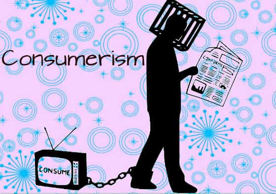

Although there exist several interesting writers who are linked to the right – Oswald Spengler, Vilfredo Pareto, Carl Schmitt, and Julius Evola to name a few – many of them lived many decades ago. Their contemporaries are mainly academic types and some of them not even particularly right-wing.
One exception, though, is the French New Right (Nouvelle Droite) thinker, Guillaume Faye, known for his writings that have been translated into English as Archeofuturism, Why We Fight, and The Convergence Of Catastrophes, with help of the transnational publishing house Arktos Media. Also his latest book, A Global Coup (2017), which concerns the relationships between Europe and America, is sound.
There are a number of points to criticize Faye for, such as his penchant for biological engineering and that he somewhat misguidedly bases his argument on Samuel Huntington’s book The Clash Of Civilizations. Yet the strengths are predominant.
I consider Why We Fight to be his most important book. It was originally written in 2001 and show how correct Faye was and that his ideas largely overlap neomasculinity and a general masculine thought program. Since the book is largely structured as a dictionary which discusses multiple keywords, I have selected some of them and quoted Faye. All of them are relevant to a broad male audience.
1. Aesthetics
Contemporary egalitarian ideology abhors and implicitly domonises aesthetics. (…) With the plastic arts, architecture, cinema, literature, theatre, even fashion, the ugly, the unachieved, the unformed, the most far-fetched nonsense, the shady and the watered down are now preferred to the aesthetic, which is made synonymous with a menacing ‘order’. Since the mid-Twentieth century, contemporary arts, encouraged by the dominant ideology, have rejected any notion of aesthetics. Instead of harmony, the power of forms, the exaltation and elevation of sensation of beauty – notions of abstract ‘conceptual art’ are preferred, which becomes a pretext for degeneracy, wilful ugliness, and subsidied incompetence.
2. Consumerism
Consumerism is a form of slavery, to which the mass men of our civilisation have succumbed, these mass men who are neither citizens, nor actors, nor responsible individuals, but rather passive domesticated beings.

3. Devirilisation
The declining values of courage and virility for the sake of feminist, xenophile, homophile, and humanitarian values. (…) In no case the notion of ‘virility’ ought to be confused with ‘machismo’ or with the stupid demand for some sort of ‘masculine social privilege’.

4. Discipline
Discipline is the basis of all education and every civilisation. Permissive ‘pedagogical’ theories cannot but lead to the failure to transmit knowledge, as is so evident today.

5. Domestication
Its symptoms are innumerable: susceptibility to ideological conditioning, dependence on consumerist ways of life, loss of independent judgment in respect to propaganda and culpability, the banishment of all spirituality (replaced by the media gnosis) etc.
6. Elite
Contemporary elites are ‘recruited’ according to criteria that have nothing to do with excellence or character. These criteria are now nepotism, connection, membership in a lobby, a clique, a mafia, a clan (sociological or ethnic); or else the ability to make money.
7. Homophilia
After having long sought recognition as a marginal social element, the homosexual lobby now demands a sort of superiority, with heterosexuality treated as something inferior or mutilated. First equal rights, then privileges.

8. Human rights
As a synthesis of Eighteenth-century political philosophy (often badly understood), human rights is the inescapable horizon of the dominant ideology. (…) Profoundly hypocritical, human rights ideology accomodates every form of social misery and justifies every form of oppression. It functions as a veritable secular religion. The ‘human’ in human rights is nothing but an abstraction, a consumer-client, an atom. (…) ‘Humans’ (already a vague notion) possess no fixed or universal rights, only those bequethed by their civilisation, their tradition.
9. Neo-primitivism
The signs of this new primitivism are multiple: the rise of illiteracy in the schools, the explosion of drug use, the Afro-Americanisation of popular music, the collapse of social codes, the decline of general culture, knowledge, and historical memory among the young, dissolution of contemporary art into a brutal, vacuous nihilism, the mass coarsening and deculturation fostered by audio/visual media (the ‘cathodic religion’), the increase of criminality and uncivil behavior, the decline of civic duty, the accelerated crumbling of social norms and collective disciplines, the deterioration of the language, etc.
10. Populism
This presently pejorative word must be made positive. The prevailing version to populism actually expresses a covert contempt for authentic democracy. Like its corollary anti-demagoguery, anti-populism is a semantic ruse of politicians and bourgeois intellectuals – to deflect the people’s will, especially that of the modest social strata, reputedly dangerous, because they are the most nationalist.

11. Presentism
Presentism fosters contempt for the survival of one’s people. It’s a consequence of a narcissistic individualism and the bourgeois spirit. (…) Presentism is the infantile demand for everything right now…

In closing
As has been demonstrated above, Faye is a straightforward writer who points out important aspects of our present Western societies and how we can try to fix some of them. While many of his works are worth reading in full, these eleven aspects point out some of the core ideas which are particularly important.
For more of William Adams’ material, check out his website Syncretic politics.
Read Next: Why Beauty Is Not As Subjective As Feminists Insist